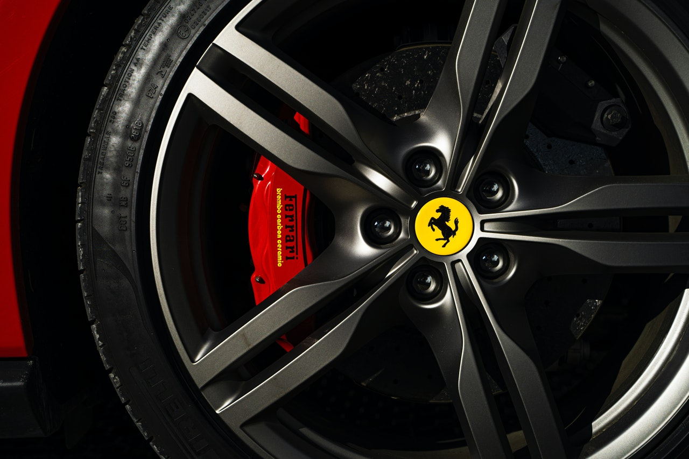
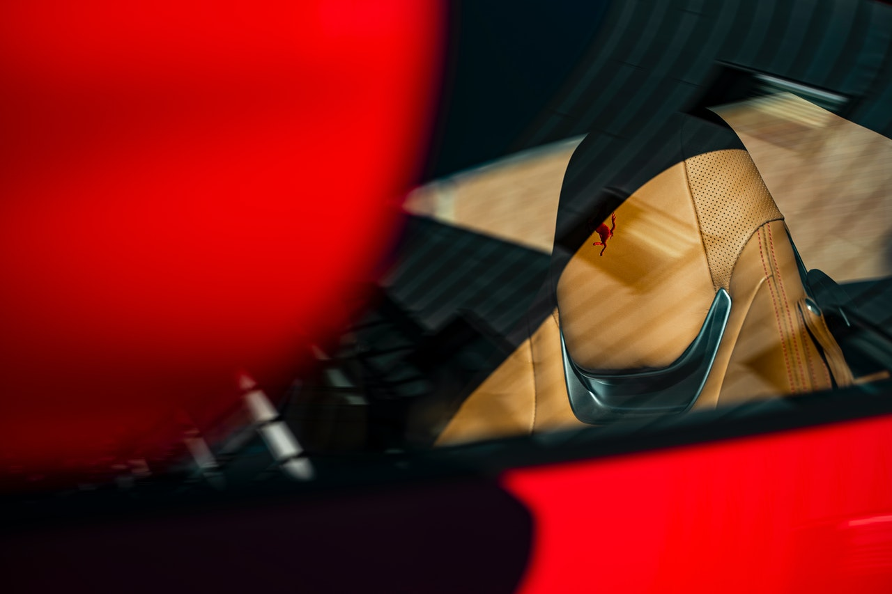
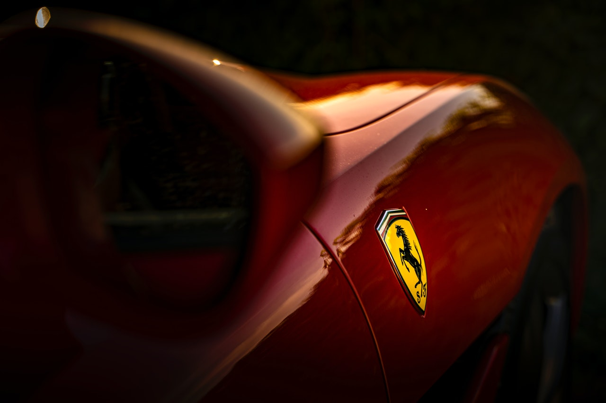
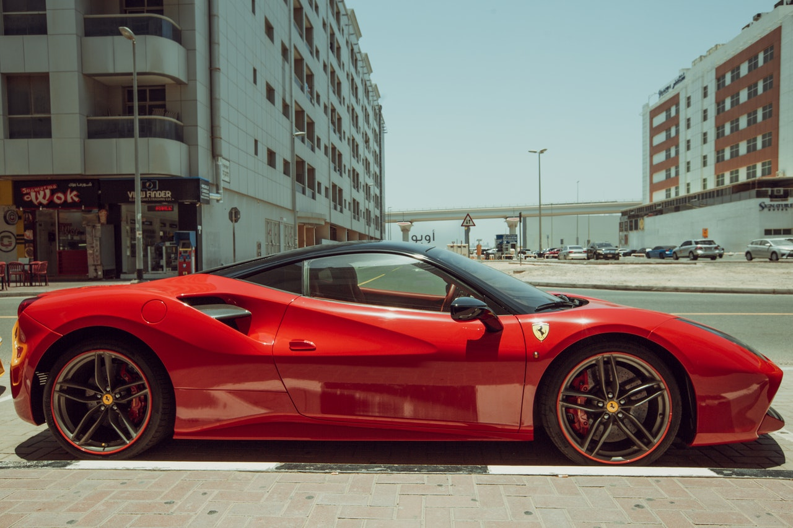
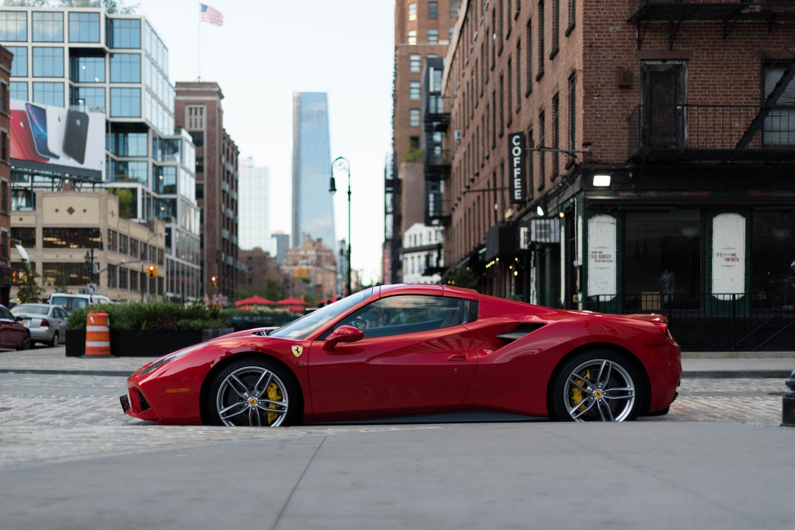
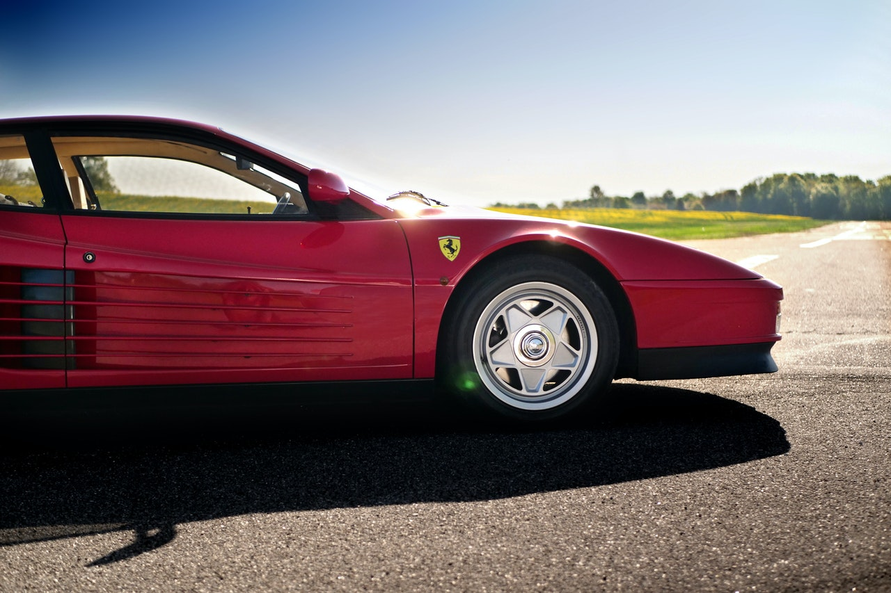

Pirellijeve gume za Ferrari savršen su spoj tehnologije i inovacije, izrađene s posebnom smjesom gaznoga sloja koja se bez oklijevanja može nositi s svim vremenskim uvjetima.

Postoje četiri glavna stila sjedala: ručni, električni, potpuno električni i karbonski trkaći. Sljedeća je boja sjedala i možete birati između desetaka boja kože i alcantare.

Što znači SF kod Ferrari? Kurzivno pism SF u većini Ferrarijevih dizajna logotipa znači "Scuderia Ferrari". Ovo je talijanski izraz koji znači štala, mjesto gdje ljudi drže konje. Također, Scuderia se odnosi na Ferrarijev trkaći tim.

Ferrari je iznimno uspješan brend i s dobrim razlogom mnogi su pokušali svoju sreću da ih otkupe. Jedna takva tvrtka bila je Ford Motor Company koja je Enzu Ferrariju ponudila oko 18 milijuna dolara 1963. godine.

Ferrari ima Tailor-Made program koji kupcima omogućuje personaliziranje mnogih elemenata svog novog automobila. U ponudi tvornice Maranello, kupci mogu birati između živih boja, raznih unutarnjih ukrasa, završnih obrada i ostalih dodataka.

Prema savjetu predsjednika Luce di Cordero Montezemolo, Ferrari je pokušao ograničiti proizvodnju kako bi spriječio razvodnjavanje tržišta svojih proizvoda.Tvrdio je da je "Ekskluzivnost Ferrarija temeljna za vrijednost naših proizvoda. Odlučili smo napraviti manje automobila jer u suprotnom riskiramo ubacivanje previše automobila na tržište."